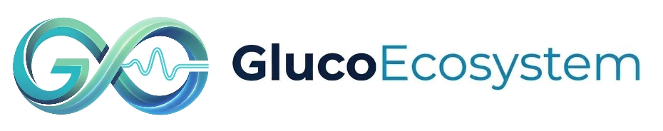

İlişkilerde yaşanan krizler; bireylerin kendi sınırlarını koruyabilmesi, ihtiyaçlarını açıkça ifade edebilmesi ve birbirini önyargısız dinleyebilmesiyle aşılır. Eşler, aile fertleri ve bireyler için güvenli, tarafsız ve yapıcı bir online diyalog alanı sunuyorum.

Online Danışmanlık
Hülya Tuncer • Aile ve İlişki Danışmanı
01
Etik ilkeler doğrultusunda güvenli ve korunaklı seans ortamı.
02
Aile içi sağlıklı rol dağılımı, iletişim dili ve kuşaklararası bağlar.
03
Tıkanan iletişim kanallarını açan, empati ve sınır temelli danışmanlık.
04
Glucoecosystem bünyesinde Tip 1 diyabetli ailelere özel psikososyal rehberlik.
Aile danışmanlığı yalnızca çekirdek aileyi değil; bir evi, anıları ve hayatı paylaşan tüm insan bağlarını kapsar. Bireylerin kendi özerkliğini yitirmeden, karşılıklı saygı ve şeffaflıkla bir arada var olabilmelerini hedefler.

Aile & İlişki Danışmanlığı
Bireysel, Çift ve Aile Danışmanlığı
“İlişkinin içinde, insanın izinde. İki insan birbirine baktığında iki dünya karşılaşır; aradaki bağ onarıldığında insan kendi özünü ve iç huzurunu yeniden bulur.”
— Hülya Tuncer
Sembolün iki kenarında altın çizgilerle karşılıklı duran iki insan silueti. Biri diğerini yutmaz, baskılamaz veya dönüştürmeye zorlamaz. İki kardeş, aynı evi paylaşan iki dost ya da eşler; kendi özerkliğini koruyarak birbiriyle göz hizasında ve şefkatle temas eder.
İki profilin arasından süzülerek uzağa uzanan mavi yol, paylaşılan hayatın ve duygu akışının sembolüdür. İlişkilerdeki krizler, bu nehrin önüne düşen taşlardır; seanslarda amaç nehri kurutmak değil, akışın önündeki tortuları sevgiyle temizlemektir.
Ufukta beliren altın güneş, yaşanan her zorluğun ardından doğacak yeni bir günün müjdecisidir. Farkındalıkla aydınlanan zihin, krizleri birer yıkım değil, olgunlaşma ve kenetlenme fırsatına dönüştürür.
Merkezden göğe uzanan adaçayı yeşili, terakota mercan ve dingin okyanus tonlarındaki yapraklar; bireylerin ve ailenin duygusal gelişimini, kendi potansiyelini gerçekleştirmesini ve Glucoecosystem Tip 1 Diyabet aile desteğinin psikososyal direncini simgeler.
En üstte süzülen altın cevher, danışmanlık sürecinin sağladığı güvenli limanı ve ortak aklı temsil eder. Bireyler bu güvenli alanda yargılanmadan kendileri olabilirler.
Belirlenen amblem ve felsefe; seans materyallerinden danışan günlüğüne, kurumsal dosyadan dijital ortama kadar tutarlı bir güven dili oluşturur.

İskandinav estetiğinde traverten ve meşe dokusunda mimari kabartma amblem. Danışmanlık kimliğinin ciddiyetini ve huzur veren profesyonel duruşunu yansıtır.

Ağır gramajlı pamuklu kağıt üzerine sıcak altın varak kabartma. Gizlilik ve mesleki ciddiyet prensibini dokunsal olarak hissettirir.

Adaçayı yeşili keten kapaklı, altın varak amblemli özel danışan günlüğü. Danışanın kendi içsel yolculuğunu ve farkındalıklarını not ettiği kıymetli alan.
“Bir ailenin hikayesi; anlaşılmaya, önyargısız dinlenmeye ve kendi ritminde onarılmaya değer en kıymetli alandır.”
Merhaba, ben Hülya Tuncer. Marmara Üniversitesi onaylı sertifikalı Aile Danışmanıyım. Çalışmalarımda aileyi yalnızca geleneksel bir şablonla sınırlandırmıyorum; bazen aynı çocukluğu paylaşmış iki yetişkin kardeşin düğümlenen bağı, bazen aynı evi ve hayatı paylaşan iki yol arkadaşının ortak yaşam dengesi, bazen de evlilik ve ebeveynlik dinamikleridir. İki insanın hayatı ve ortak sorumluluğu paylaştığı her alanda güvenli, sağlıklı ve çözüm odaklı sistemler kurmalarına rehberlik ediyorum.
Seanslarımda; dünyaca kabul görmüş Virginia Satir Sistemik İlişki Modeli'ni, Şiddetsiz İletişim (NVC) felsefesini ve danışanların duygusal ihtiyaçlarını görünür kılan Terapötik Kartlar metodolojisini kullanıyorum. Danışanlarıma zaman ve mekan sınırlaması olmaksızın, kendi güvenli alanlarında kalabilecekleri yalnızca online seanslar (Zoom / Google Meet) ile hizmet veriyorum. Randevu oluşturmak ve seans süreçleri hakkında detaylı bilgi almak için web sitemizi (hulyatuncer.com.tr) ziyaret edebilirsiniz.
Tip 1 Diyabet ve kronik sağlık yolculuğunda çocukların kabullenme süreçleri, ebeveyn tükenmişliği (burnout) ve aile içi denge konusunda Glucoecosystem çatısı altında özel psikososyal rehberlik sağlıyorum.
Bireysel ve ilişkisel düzeyde karşılaşılan sorunlarda, açık iletişim ve sistemik yaklaşımla yapılandırılmış online seanslar.
Eşler ve yetişkin aile fertleri arasındaki iletişim tıkanıklıkları, ortak yaşam sınırları ve anlaşmazlıkların yapıcı çözümü.
Aile içi sağlıklı sınırlar, pozitif ebeveynlik tutumları, kuşaklararası aktarım ve ev içindeki rol dengesi.
Kişisel sınırları güçlendirme, öfke ve duygu regülasyonu, evlilik öncesi hazırlık ve ilişkisel tükenmişlik süreçlerinde rehberlik.
Glucoecosystem güvencesiyle; Tip 1 diyabetli çocukların ebeveynlerine psikososyal destek, hipoglisemi kaygısı ve okul uyumu.

Resmi İş BirliğiDiyabet yalnızca sensörler, insülin dozları ve kan şekeri grafiklerinden ibaret değildir. Asıl görünmeyen yük; uykusuz geceler, hipoglisemi korkusu, okulda çocuğunun yanında olamama endişesi ve ebeveyn tükenmişliğidir.
Hülya Tuncer, Glucoecosystem bünyesinde Tip 1 diyabetli çocukların ebeveynlerine, kardeşlerine ve ergenlik çağındaki gençlere özel yapılandırılmış psikososyal rehberlik sunmaktadır.
Sürekli alarm kontrol etmenin yarattığı kronik uyku bozukluğu ve ebeveyn tükenmişliğini yönetme adımları.
Okul ortamı, öğretmenlerle diyalog ve çocuğun akranları arasında kendini dışlanmış hissetmesini önleme.
Diyabet yönetiminde çatışmaları azaltma, sorumluluk devri ve ergenlikteki bağımsızlaşma sürecinde güvenli iletişim.
İlginin kronik sağlık sürecine odaklandığı dönemlerde diğer kardeşlerin duygusal ihtiyaçlarını gözeten denge.
Kelimelerin tıkandığı yerde semboller konuşur. Seanslarımızda uluslararası geçerliliği olan araçlarla duyguları görünür kılıyoruz.
Tandoo, Persona, Cope ve Duygu / İhtiyaç Kartları
Kelimelerle ifade edilmesi güçleşen duygusal yükler, çatışmalar ve görünmez bariyerler metaforik kartlar aracılığıyla görünür kılınır. Danışan seçtiği sembol ve imgeler üzerinden kendi iç dünyasını yargılanma endişesi duymadan ele alma fırsatı bulur.
Web sitesi veya WhatsApp üzerinden form doldurarak temel ihtiyacınızı bize iletirsiniz.
Online (Zoom/Google Meet) üzerinden Türkiye ve dünyanın her yerinden uygun saat dilimi belirlenir.
50 dakikalık yapılandırılmış, yargısız ve çözüm odaklı seanslarla kök sorunlara inilir.
Gelişim basamakları ve aile içi ödevlerle kazanımların hayata geçmesi takip edilir.
Aşağıdaki kısa formu doldurduğunuzda doğrudan WhatsApp üzerinden ön görüşme ve randevu talebiniz Hülya Tuncer'e iletilecektir.